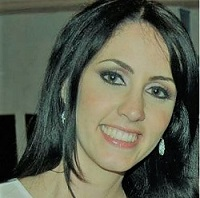
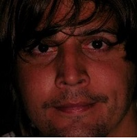
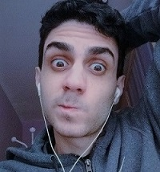

Organigrama
Francisco Di Cera

Presidente
Hobbies: Cerrar un ojo, viajar por el mundo, hacer reir.
Skills: Liderar, Estar tranquilo, Hacer montajes fotograficos, Diseño.
Juan C. Contreras

Vicepresidente
Hobbies: Actualizar su guardarropas, Leer noticias, Ir de Pachanga.
Skills: Periodismo, Logistica y Rumbear.
Nataly Torres
Primera Dama
Hobbies: Leer, Viajar, ver fotos de Matthew.
Skills: Administracion, Solucionadora de Problemas.
Eglis Peña

Terapeuta
Hobbies: Ir a la Iglesia, Pasear con su pareja.
Skills: Fisioterapia, Identificar noticias falsas.
Richard Lastella
Director Juvenil
Hobbies: Tener Sex Sex Sex, Ejercitarse, Actuar.
Skills: Beber, Ser anfitrion en Reuniones.
Rodolfo Da Silva

Director de Obra
Hobbies: Trabajar, Comer, Jugar Basket.
Skills: Comer casi de lo que sea, Trabajar largas jornadas sin cansarse.
Mayra Da Silva

Comunity Manager
Hobbies: Piscina, Playa, Viajar y Bodas.
Skills: Activa en Redes Sociales, Defender a sus Hermanos.
Lisett Da Silva

Asesora de Imagen
Hobbies: Viajes, Playa, Paseos en Avionetas y Lanchas.
Skills: Siempre Lista, Hacer Maletas en 2 segundos.
Erika Serna

Consultora
Hobbies: Pintar, Pasear por la ciudad, Salir a comer.
Skills: Cocinar, Manualidades, Dormir.
Jesus Torres
Project Manager
Hobbies: Leer, Pasear por la Ciudad, Ver Futbol.
Skills: Comer mucho y no engordar, Jugar basket, Permanecer despierto mucho tiempo.